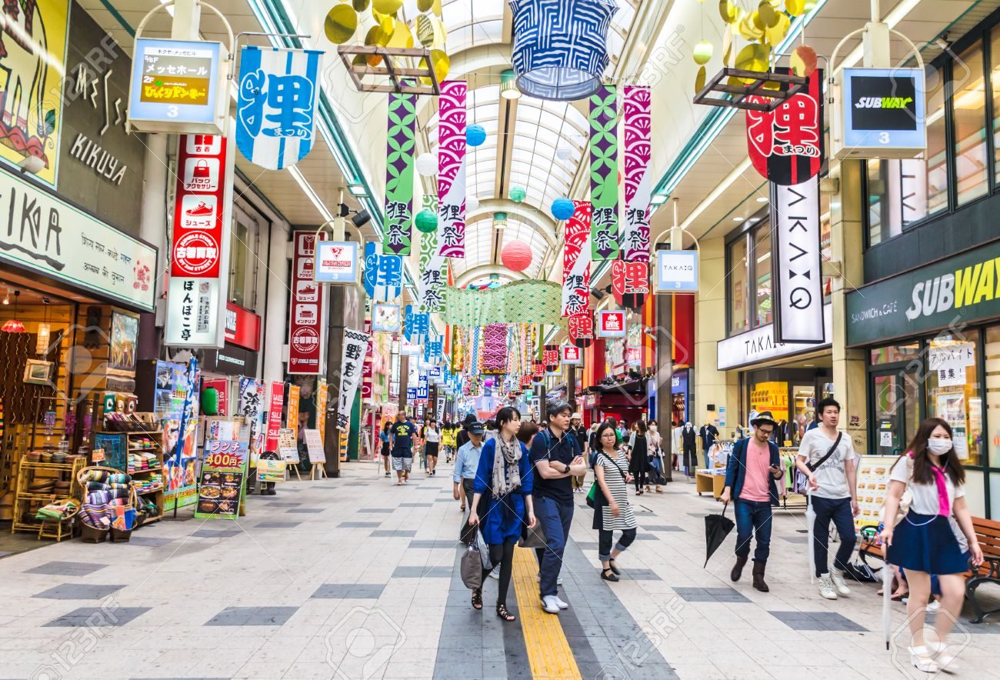

Sapporo (札幌市, Sapporo-shi) is the largest Japanese city north of Tokyo and the largest city on Hokkaido, which is Japan's northernmost main island. It is the capital city of Hokkaido Prefecture and Ishikari Subprefecture. Sapporo lies in the southwest of Hokkaido, within the alluvial fan of the Toyohira River, which is a tributary stream of the Ishikari. Sapporo is considered the cultural, economic, and political center of Hokkaido. As with most of Hokkaido, the Sapporo area was settled by the indigenous Ainu people, beginning over 15,000 years ago. Starting in the late 19th century, Sapporo saw increasing settlement by Japanese migrants. Sapporo hosted the 1972 Winter Olympics, the first Winter Olympics ever held in Asia, and the second Olympic games held in Japan after the 1964 Summer Olympics. The Sapporo Dome hosted three games during the 2002 FIFA World Cup and two games during the 2019 Rugby World Cup.

Additionally, Sapporo has hosted the Asian Winter Games three times, in 1986, 1990, and 2017. The annual Sapporo Snow Festival draws more than 2 million tourists from abroad. Other notable sites include the Sapporo Beer Museum, which is the only beer museum in Japan, and the Sapporo TV Tower located in Odori Park. It is home to Hokkaido University, just north of Sapporo Station. The city is served by Okadama Airport and New Chitose Airport in nearby Chitose. In 2001 the construction of the Sapporo Dome was completed, and in 2002 the Dome hosted three games during the 2002 FIFA World Cup; Germany vs Saudi Arabia, Argentina vs England and Italy vs Ecuador, all of which were in the first round. Fumio Ueda, was elected as Sapporo mayor for the first time in 2003. Sapporo became the home to a Nippon Professional Baseball team, Hokkaido Nippon-Ham Fighters, in 2004, which won the 2006 Japan Series, and the victory parade was held on Ekimae-Dōri (a street in front of Sapporo Station) in February 2007.
The 34th G8 summit took place in Tōyako in 2008, and a number of people including anti-globalisation activists marched in the heart of the city to protest. Police officers were gathered in Sapporo from all over Japan, and the news reported that four people were arrested in the demonstrations. The Hokkaidō Shinkansen line, which currently connects Honshu to Hakodate through the Seikan Tunnel, is planned to link to Sapporo by 2030. Sapporo is a city located in the southwest part of Ishikari Plain and the alluvial fan of the Toyohira River, a tributary stream of the Ishikari River.It is part of Ishikari Subprefecture. Roadways in the urban district are laid to make a grid plan. The western and southern parts of Sapporo are occupied by a number of mountains including Mount Teine, Maruyama, and Mount Moiwa, as well as many rivers including the Ishikari River, Toyohira River, and Sōsei River. Sapporo has an elevation of 29 m (95 ft 2 in) Sapporo has many parks, including Odori Park, which is located in the heart of the city and hosts a number of annual events and festivals throughout the year. Moerenuma Park is also one of the largest parks in Sapporo, and was constructed under the plan of Isamu Noguchi, a Japanese-American artist and landscape architect. Neighbouring cities are Ishikari, Ebetsu, Kitahiroshima, Eniwa, Chitose, Otaru, Date, and adjoining towns are Tōbetsu, Kimobetsu, Kyōgoku.